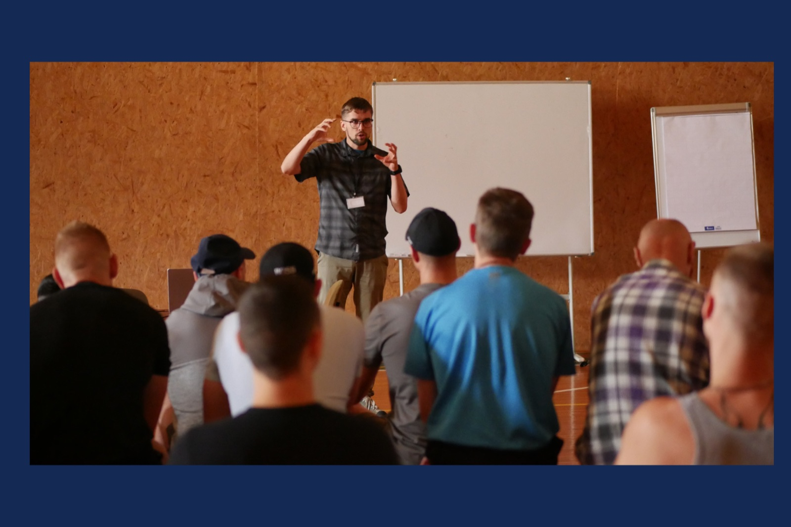
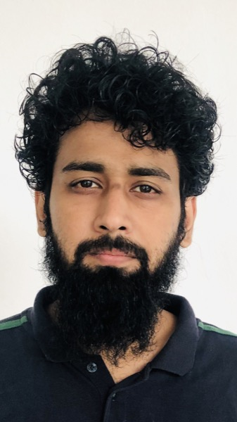
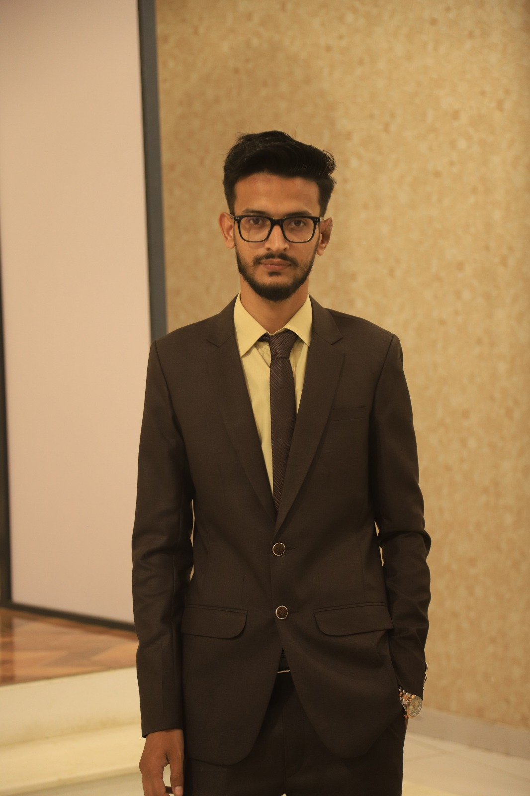

Curiosity, for everyone
Young residents get a friendly, non-technical look at physics through simple, relatable sessions from university students who volunteer their time. The aim is to spark curiosity, encourage constructive thinking, and offer a positive educational break from routine facility life.
Particle Physics
An easy introduction to atoms, particles, and the building blocks of matter.
Medical Physics
How physics is used in hospitals and medicine: X-rays, imaging, radiation therapy.
Quantum Physics
A simplified, fascinating look into the quantum world.
Where the idea came from

This activity was inspired by Dr. Gediminas Šarpis, who ran Particle Physics in Prisons at Kaunas Prison in Lithuania, together with the NGO Inscribed Hands, which brings volunteers into prisons to provide activities and training.
Meet the speakers and organizers

Muhammad Maaz Adnan
Speaker

Shafiq Ur Rehman
Speaker
Hamza Hanif
Organizer